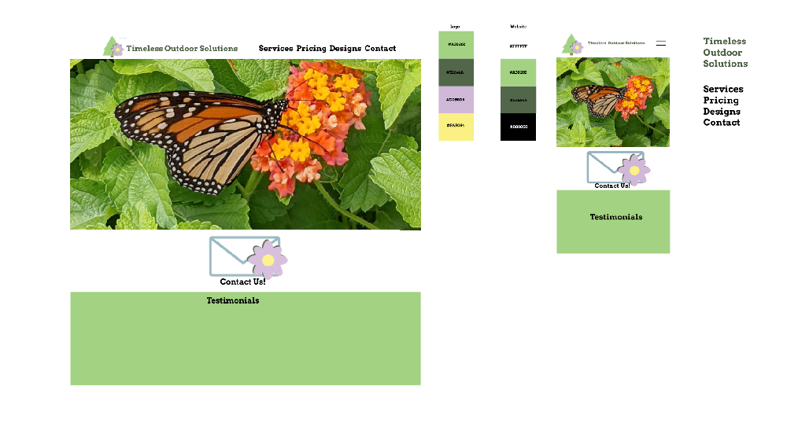

Timeless Outdoor Solutions
A landscape company wanted a nice logo and refresh on their website that would be accessible for their older customersand be responsive for mobile.
First, we start with a simple and fresh design that would be respoinsive and
accessible for their user base.

Afterwards, we reworked their logo. We kept the same idea of the tree and flower,
however we made the image a vector and updated it.
They also wanted a CTA button that would catch the users attention